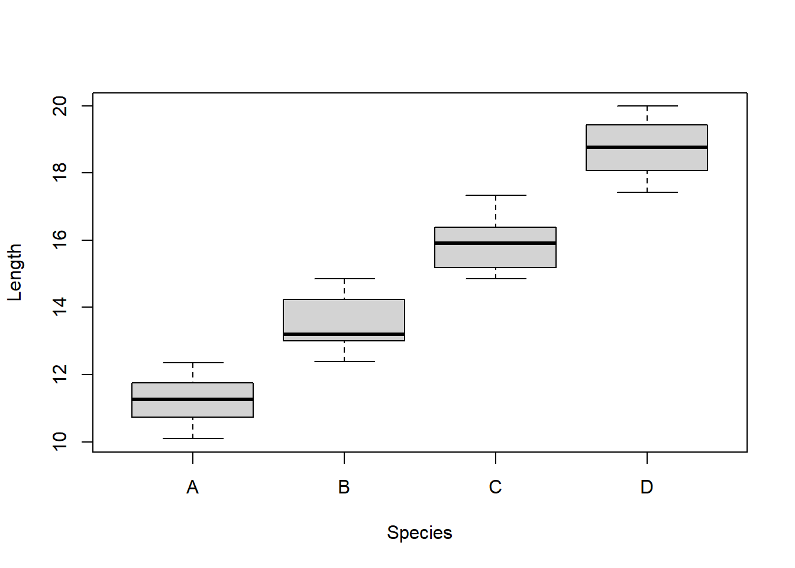
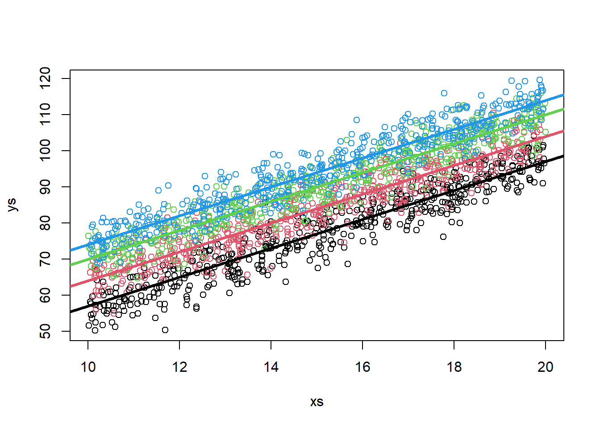
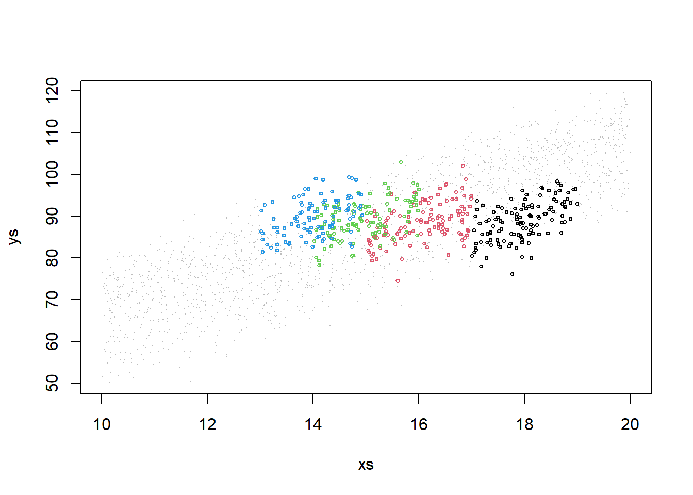

Chapter 10 ANCOVA is (also) just a linear model
We move on to Analysis of Covariance, a.k.a. ANCOVA, which is essentially like an ANOVA to which we add a continuous explanatory covariate to the factor covariate in our attempt to explain the response.
The ANCOVA was traditionally used to compare means of an outcome variable between two or more groups taking into account (or to correct for) variability of other variables, called covariates. In other words, ANCOVA allows to compare the adjusted means of two or more independent groups. It is just… another linear model with a fancy name! Words adapted from this link https://www.datanovia.com/en/lessons/ancova-in-r/!
This is an extremely common situation in biology/ecology data. Consider, as an example, you are trying to explain how the weight of a fish depends on its length, but you want to see if that relationship changes per year or site.
Also, remember the dataset we considered in class 7. The data was simulated via this website: https://drawdata.xyz/ and was named data4lines.csv. Those had (about) the same slope in 3 groups, and a different slope in a forth group. That could be analyzed as an ANCOVA, and we will look at it that way at the end.
Lets simulate some relevant data and fit the models
10.1 Common slope, different intercepts per treatment
We begin with a situation where there are different intercepts per group, but a common slope across all groups. Contrast this with what we saw under the previous class, under chapter 8.
To make it interesting, assume that we are simulating weights for 4 different species, and that weights depend on length (as they almost always do!).
This would be interesting and could be some real data if say one wanted to compare the weights of the fishes of 4 different species, we had captured 50 animals from each species. But we know that the fish lengths across species might be different to begin with, and yet our key interest would be say the weight by species, and in that sense the length was essentially a confounding factor.
#all slopes the same, different intercepts - no interactions
set.seed(1234)
n<-200
nbygroup<-50
xs <- runif(n,10,20)
tr <- c("a","b","c","d")
type <- rep(tr,each=nbygroup)
cores <- rep(1:4,each=nbygroup)
a<-3
b<-4
error<-4
ys <- a+b*xs+
ifelse(type=="a",5,ifelse(type=="b",8,ifelse(type=="c",10,12)))+rnorm(n,0,4)We plot the data, all together, per group, and at the end adding the generating line to the plot. It’s not easy to make sense of it!
par(mfrow=c(2,3),mar=c(4,4,0.5,0.5))
#all the data - uma salganhada!
plot(xs,ys,col=cores,cex=0.8)
#plot the data
#par(mfrow=c(2,2),mar=c(4,4,0.5,0.5))
plot(xs[type=="a"],ys[type=="a"],col=cores[type=="a"])
abline(3+5,4,lwd=3,col=1)
plot(xs[type=="b"],ys[type=="b"],col=cores[type=="b"])
abline(3+8,4,lwd=3,col=2)
plot(xs[type=="c"],ys[type=="c"],col=cores[type=="c"])
abline(3+10,4,lwd=3,col=3)
plot(xs[type=="d"],ys[type=="d"],col=cores[type=="d"])
abline(3+12,4,lwd=3,col=4)
#the data with each line added to it
#par(mfrow=c(1,1),mar=c(4,4,0.5,0.5))
plot(xs,ys,col=cores,cex=0.2)
abline(3+5,4,lwd=3,col=1)
abline(3+8,4,lwd=3,col=2)
abline(3+10,4,lwd=3,col=3)
abline(3+12,4,lwd=3,col=4)
While not the best to look at the data, note that to visually confirm the value of the intercepts we can zoom out on the plot.
plot(xs,ys,col=cores,xlim=c(0,20),ylim=c(0,150))
abline(3+5,4,lwd=3,col=1)
abline(3+8,4,lwd=3,col=2)
abline(3+10,4,lwd=3,col=3)
abline(3+12,4,lwd=3,col=4)
abline(h=c(3+5,3+8,3+10,3+12),v=0,col=c(1,2,3,4,1),lty=2)
Now we run the corresponding linear model
##
## Call:
## lm(formula = ys ~ xs + type)
##
## Residuals:
## Min 1Q Median 3Q Max
## -13.4694 -2.3640 0.2813 2.1063 11.6596
##
## Coefficients:
## Estimate Std. Error t value Pr(>|t|)
## (Intercept) 9.24244 1.57462 5.870 1.85e-08 ***
## xs 3.92089 0.09997 39.220 < 2e-16 ***
## typeb 3.11952 0.80410 3.880 0.000143 ***
## typec 5.80393 0.80324 7.226 1.10e-11 ***
## typed 7.36736 0.80434 9.159 < 2e-16 ***
## ---
## Signif. codes: 0 '***' 0.001 '**' 0.01 '*' 0.05 '.' 0.1 ' ' 1
##
## Residual standard error: 4.008 on 195 degrees of freedom
## Multiple R-squared: 0.9011, Adjusted R-squared: 0.8991
## F-statistic: 444.3 on 4 and 195 DF, p-value: < 2.2e-16We can check the model intercept coefficients
## [1] 9.242444## [1] 12.36196## [1] 15.04638## [1] 16.60981and the common slope
## [1] 3.920888Check how these values are similar (they are estimates) to those we simulated above, slope was 4, and the intercepts were respectively 3+5,3+8,3+10 and 3+12.
We can plot the estimated regression lines
par(mfrow=c(1,1),mar=c(4,4,2.5,0.5))
plot(xs,ys,col=cores,main="Estimated regression lines")
abline(lm.ancova1$coefficients[1],lm.ancova1$coefficients[2],col=1,lwd=2)
abline(lm.ancova1$coefficients[1]+lm.ancova1$coefficients[3],lm.ancova1$coefficients[2],col=2,lwd=2)
abline(lm.ancova1$coefficients[1]+lm.ancova1$coefficients[4],lm.ancova1$coefficients[2],col=3,lwd=2)
abline(lm.ancova1$coefficients[1]+lm.ancova1$coefficients[5],lm.ancova1$coefficients[2],col=4,lwd=2)
legend("topleft",legend = tr,lwd=2,col=1:4,inset=0.05)
But because we are in a simulation setting, we can contrast the estimated values against the reality (the real model).
#In a simulated scenario, we can see we are close to the real values
plot(xs,ys,col=cores)
#plot the lines
abline(a+5,b,lwd=2,col=1)
abline(a+8,b,lwd=2,col=2)
abline(a+10,b,lwd=2,col=3)
abline(a+12,b,lwd=2,col=4)
#group a
abline(lm.ancova1$coefficients[1],lm.ancova1$coefficients[2],lwd=1,col=1,lty=2)
#group b
# intercept+slope*xs+intercept especifico do group b
# (intercept+intercept especifico do grupo b)+ slope
abline(lm.ancova1$coefficients[1]+lm.ancova1$coefficients[3],lm.ancova1$coefficients[2],lwd=1,col=2,lty=2)
#group c
abline(lm.ancova1$coefficients[1]+lm.ancova1$coefficients[4],lm.ancova1$coefficients[2],lwd=1,col=3,lty=2)
#group d
abline(lm.ancova1$coefficients[1]+lm.ancova1$coefficients[5],lm.ancova1$coefficients[2],lwd=1,col=4,lty=2)
As we can see, they are quite close. The error is small compared with the effect sizes, and the sample size is large enough we can estimate the parameters reasonably well.
But how exactly do we get the predicted intercepts?
(note to TAM: this should come much before and not “lost” as a detail in the middle of this ANCOVA section)
To understand where they come from we need to see what R does (or, for that matter, what any other software would need to do!) in the background to fit a model with a factor covariate. Remember what the data is
## ys xs type
## 1 54.20623 11.13703 a
## 2 70.99310 16.22299 a
## 3 72.63496 16.09275 a
## 4 70.92527 16.23379 a
## 5 79.13262 18.60915 a
## 6 74.28038 16.40311 a
## 7 44.79477 10.09496 a
## 8 57.97476 12.32551 a
## 9 76.06322 16.66084 a
## 10 68.36163 15.14251 aand in particular that the factor covariate type has 4 levels

Before fitting a factor covariate, we need to replace it by dummy variables (\(k-1\) dummy variables, where \(k\) is the number of levels of the factor). Below we look at a set of data lines that allow us to see observations from the different types considered
#explaining it
data.frame(ys=ys,xs=xs,type=type,typeb=ifelse(type=="b",1,0),typec=ifelse(type=="c",1,0),typed=ifelse(type=="d",1,0))[c(1,49,50,51,99,100,101,149,150,151,200),]## ys xs type typeb typec typed
## 1 54.20623 11.13703 a 0 0 0
## 49 59.78224 12.43929 a 0 0 0
## 50 80.00860 17.65460 a 0 0 0
## 51 52.44224 10.73780 b 1 0 0
## 99 64.03652 13.09647 b 1 0 0
## 100 72.37184 17.42120 b 1 0 0
## 101 56.35918 10.35457 c 0 1 0
## 149 93.28892 19.80787 c 0 1 0
## 150 77.14469 15.76813 c 0 1 0
## 151 74.30940 14.39042 d 0 0 1
## 200 81.84481 16.39205 d 0 0 1So R first builds what is known as the design matrix. Notation wise Y= parameters \(\times\) design matrix, or Y = \(\beta\)X (see e.g. https://en.wikipedia.org/wiki/Design_matrix)
#the design matrix
head(data.frame(xs=xs,typeb=ifelse(type=="b",1,0),typec=ifelse(type=="c",1,0),typed=ifelse(type=="d",1,0)))## xs typeb typec typed
## 1 11.13703 0 0 0
## 2 16.22299 0 0 0
## 3 16.09275 0 0 0
## 4 16.23379 0 0 0
## 5 18.60915 0 0 0
## 6 16.40311 0 0 0and that is what is used for the fitting. Therefore, if we want to know the intercept of say type c, we need to sum the common intercept with the parameter associated with the dummy variable typec. The overall model formula becomes
\[Y= \alpha + \gamma_b × typeb + \gamma_c × typec + \gamma_d × typed + \beta × xs\] This would be an ANCOVA, and here we would conclude that the mean of the response was different for the different levels of \(z\) , once accounting for the fact that the \(xs\) varied. this is evident since all the coefficients estimates and associated precision in the summary of the model above would lead to rejecting the null hypothesis that their value was 0, as can be seen by the corresponding very small p-values. Not a surprise, since we simulated them as different and the errors were small.
Task: Increase the simulated error or lower the coefficients until you get type II errors. Change also sample sizes and effect sizes to see the impacts on the model performance!
10.2 ANCOVA encore
Here we present an ANCOVA encore, that is, we look again at the ANCOVA model presented in chapter 10, but under a different perspective. This material was created as a bonus for students, to understand why the ANCOVA is what it is. Additionally, this also provides a cautionary tale about the dangers of non-random sampling, or more generally, confounding due to unmeasured factors that might affect our response variable.
10.2.1 Same story, another spin
As we noted above, the ANCOVA would be an useful model in a classical setting to compare means of an outcome variable between two or more groups taking into account (or to correcting for) variability induced by other variables, often called covariates. In other words, ANCOVA allows to compare the adjusted means of two or more independent groups.
Here we tell the same story from chapter 10 under said perspective. We will do so with the help of two unlikely characters. This is the story of two friends: a biologist that is exploring the weights of lizards, and his friend, a former biologist that decided to take an MSc in Ecological Statistics!
The biologist will be the hero of our story. He has a great name. George Ramsey Ernest Armitage Turner. Note that he has 5 names, unusual in the Anglosaxonic world, but not that uncommon is say Portugal. To make it easier, we’ll call him just by his initials. So… let’s call him Great :) Great’s friend, whom also happens to be a great friend, is simply called John. Boring, but hey, names are not something you can choose (are they?) and when you are just the sidekick on the story, you cannot complain!
Great went on a great journey to a distant Archipelago where there are 4 islands, each potentially with a different species of lizard that Great has great interest in. The folks providing names to islands where not has imaginative as Great’s parents, so the islands are called just A, B, C and D. Imagine that Great did a great job and collected a great sample of lizards in each island. Great is also interested in the amount of insects available for the lizards in each of the islands. He thinks they might determine the weight of the lizards. Weight is related to individual condition, condition to fecundity and survival, and so on.
Imagine Great wanted to compare the weights of lizard specimens he collected in each of the 4 islands. He happen to capture a number of animals in each island, and we will label them as A to D, as per the islands they came from.
(note, since this is a story, this time I am not showing you how the data was created (=simulated), for narrative reasons!)
Great created a plot of the weights, in grams (g), of the captured lizards. These look like this:

The distribution is unimodal and about symmetrical. When lizards are separated by island, they look like this

There seem to be clear differences in the weights per species, as a standard linear model (e.g. an ANOVA, see ??) will show:
##
## Call:
## lm(formula = ys ~ type)
##
## Residuals:
## Min 1Q Median 3Q Max
## -25.7066 -5.3458 -0.5474 6.2330 22.9767
##
## Coefficients:
## Estimate Std. Error t value Pr(>|t|)
## (Intercept) 48.079 1.199 40.105 < 2e-16 ***
## typeB 9.305 1.695 5.489 1.24e-07 ***
## typeC 20.254 1.695 11.947 < 2e-16 ***
## typeD 30.583 1.695 18.039 < 2e-16 ***
## ---
## Signif. codes: 0 '***' 0.001 '**' 0.01 '*' 0.05 '.' 0.1 ' ' 1
##
## Residual standard error: 8.477 on 196 degrees of freedom
## Multiple R-squared: 0.652, Adjusted R-squared: 0.6467
## F-statistic: 122.4 on 3 and 196 DF, p-value: < 2.2e-16Great is happy, he had seen different amounts of insects in each island and so he is already thinking about a paper he will write about how the size of the lizards depends on food availability.
Further, he just had a great thought. He calls these GGTs: Great’s great thoughts. He is thinking about proposing that these correspond to different species in each island, and he is already dreaming about the names of his new species: he is considering naming them “slimus”, “normalis”, “fatis”, “fattissimus”, for animals in islands A, B, C and D, respectively. The plot would then read just like this, which looks… you guessed it… great.
spnames <- c("slimus", "normalis", "fatis", "fattissimus")
boxplot(ys~type,ylab="Weight (g)",xlab="Island",
names=spnames)
Unfortunately, he goes to the pub and tells John about his findings. John has been doing some modelling courses at University and is very interested about sampling. John asks Great a great set of questions: “How did you selected the lizards you captured? What about the lengths of the lizards? Were the animals from each island of about the same length? In other words, did you control the weights for length? Because longer animals will tend to be heavier, you know?”
Great had not thought about that yet, indeed. He’s feeling dizzy, might be the beers he had, might be the questions he was just asked! He rushes home and looks at the data. And in fact, the different lizards from the different islands have very different lengths to begin with, as we can see in the plot below.

##
## Call:
## lm(formula = xs ~ type)
##
## Residuals:
## Min 1Q Median 3Q Max
## -1.30243 -0.60977 -0.06891 0.52388 1.41528
##
## Coefficients:
## Estimate Std. Error t value Pr(>|t|)
## (Intercept) 11.2298 0.1034 108.55 <2e-16 ***
## typeB 2.2413 0.1463 15.32 <2e-16 ***
## typeC 4.6822 0.1463 32.00 <2e-16 ***
## typeD 7.4886 0.1463 51.19 <2e-16 ***
## ---
## Signif. codes: 0 '***' 0.001 '**' 0.01 '*' 0.05 '.' 0.1 ' ' 1
##
## Residual standard error: 0.7315 on 196 degrees of freedom
## Multiple R-squared: 0.9368, Adjusted R-squared: 0.9358
## F-statistic: 968.6 on 3 and 196 DF, p-value: < 2.2e-16In his mind Great has a vague memory of a teacher in Numerical Ecology saying that one should explore the data before modelling. He would have avoided this embarrassment if he only had done that. Before leaving the pub he heard John saying he should look into ANCOVA’s. Something about “you need to test for the weights, accounting for differences in lengths!”.
He goes into his books and finds that ANCOVA is just a linear model, where you model a response (weight, he realizes) as a function of a factor covariate (say, island) and a continuous covariate (say length). He implements the models and, much to his despair, realizes that, once he accounts for the length, the weights are not different per island. The damn lizards are exactly the same weight in the different islands once you account for their length.
##
## Call:
## lm(formula = ys ~ xs + type)
##
## Residuals:
## Min 1Q Median 3Q Max
## -27.4613 -4.7367 0.5201 4.2655 23.8079
##
## Coefficients:
## Estimate Std. Error t value Pr(>|t|)
## (Intercept) 5.3307 8.8751 0.601 0.549
## xs 3.8067 0.7838 4.857 2.45e-06 ***
## typeB 0.7735 2.3798 0.325 0.746
## typeC 2.4305 4.0058 0.607 0.545
## typeD 2.0764 6.0853 0.341 0.733
## ---
## Signif. codes: 0 '***' 0.001 '**' 0.01 '*' 0.05 '.' 0.1 ' ' 1
##
## Residual standard error: 8.027 on 195 degrees of freedom
## Multiple R-squared: 0.6896, Adjusted R-squared: 0.6832
## F-statistic: 108.3 on 4 and 195 DF, p-value: < 2.2e-16He sees his paper further and further farther away. This is what we saw: the same line explains all the data, irrespective of the island it comes from. In other words, there is not a different relationship per species between weight and length! His great ecological theory goes to the bin!

Now, that is dismaying, but interesting. So Great returns to the pub and he asks John: “Would the opposite be possible? Say things looked just the same, yet they were different after accounting for a confounding factor?”.
“Yes”, John replied: “I have heard about that situation, but have never seen it in a real data set before. Of course that is hard to happen, because the stars need to align. But it can happen in theory. Imagine the situation where the relationship between length and weight is different per group. However, out of a strange confounding circumstance, the observed weights happen to be similar, because we sampled (just the right, in this case, wrong!) different lengths in each species.”
By now Great has a great headache, but he wants to see this with his own eyes, so he goes back home, sits in front of the computer, opens R and decides: “I will simulate this example”. That is what we will do here.
Imagine the following example:
The lizards relationship between weight and length is different per island. Say, akin to what we saw before. Just by (simulation) magic, we have access to all the lizards in the island.
#all slopes the same, diferent intercepts - no interactions
set.seed(12345)
n<-2000
nbygroup<-500
xs <- runif(n,10,20)
island <- c("A","B","C","D")
type <- rep(island,each=nbygroup)
cores <- rep(1:4,each=nbygroup)
a<-12
b<-4
error<-4
ys <- a+b*xs+
ifelse(type=="A",5,ifelse(type=="B",12,ifelse(type=="C",18,22)))+rnorm(n,0,4)
plot(xs,ys,col=cores)
abline(12+5,4,lwd=3,col=1)
abline(12+12,4,lwd=3,col=2)
abline(12+18,4,lwd=3,col=3)
abline(12+22,4,lwd=3,col=4)
Now imagine, for the sake of argument, that in all islands we captured lizards with lengths spanning about 2 cm, but in island A we caught animals with about 18 cm, in B with about 16 cm, in c with about 15 cm and in D with about 14 cm, on average. We can simulate that non-random sampling process with respect to length.
sampled.a<-which(xs>17 & xs<19 & type=="A")
sampled.b<-which(xs>15 & xs<17 & type=="B")
sampled.c<-which(xs>14 & xs<16 & type=="C")
sampled.d<-which(xs>13 & xs<15 & type=="D")
sample.all<-c(sampled.a,sampled.b,sampled.c,sampled.d)
#select a biased sample!
xs2<-xs[sample.all]
ys2<-ys[sample.all]
type2<-type[sample.all]
cores2<-cores[sample.all]
table(type2)## type2
## A B C D
## 119 116 108 100Now, if this is our sample, what happens when we look at the weights alone? First, let’s look at the previous plot with the sampled data highlighted in colors and the non sampled data grayed out.

#abline(12+5,4,lwd=3,col=1)
#abline(12+12,4,lwd=3,col=2)
#abline(12+18,4,lwd=3,col=3)
#abline(12+22,4,lwd=3,col=4)That was really not a random sample. And non-random samples always ask for trouble. Lets see what happens here. If we look at weights per island, there seems to be no effect:
If we test formally for it with an ANOVA, it seems like there is absolutely no effect on weight from the different islands
##
## Call:
## lm(formula = ys2 ~ type2)
##
## Residuals:
## Min 1Q Median 3Q Max
## -13.918 -3.137 0.035 3.142 13.648
##
## Coefficients:
## Estimate Std. Error t value Pr(>|t|)
## (Intercept) 88.9384 0.4194 212.040 <2e-16 ***
## type2B -0.4589 0.5970 -0.769 0.443
## type2C 0.4200 0.6081 0.691 0.490
## type2D 0.7764 0.6207 1.251 0.212
## ---
## Signif. codes: 0 '***' 0.001 '**' 0.01 '*' 0.05 '.' 0.1 ' ' 1
##
## Residual standard error: 4.576 on 439 degrees of freedom
## Multiple R-squared: 0.009992, Adjusted R-squared: 0.003227
## F-statistic: 1.477 on 3 and 439 DF, p-value: 0.2201This is where we need to be smart. If we conduct the correct analysis, one that includes and adjusts for the effect of length, the differences in the length to weight relationship are clear. The intercepts of the different lines are all different from each other.
##
## Call:
## lm(formula = ys2 ~ type2 + xs2)
##
## Residuals:
## Min 1Q Median 3Q Max
## -12.1010 -2.8430 -0.0603 2.7281 10.9553
##
## Coefficients:
## Estimate Std. Error t value Pr(>|t|)
## (Intercept) 18.2503 6.0704 3.006 0.0028 **
## type2B 6.9837 0.8244 8.472 3.7e-16 ***
## type2C 12.1627 1.1384 10.684 < 2e-16 ***
## type2D 16.2717 1.4349 11.340 < 2e-16 ***
## xs2 3.9374 0.3375 11.666 < 2e-16 ***
## ---
## Signif. codes: 0 '***' 0.001 '**' 0.01 '*' 0.05 '.' 0.1 ' ' 1
##
## Residual standard error: 4.001 on 438 degrees of freedom
## Multiple R-squared: 0.2447, Adjusted R-squared: 0.2378
## F-statistic: 35.47 on 4 and 438 DF, p-value: < 2.2e-16Note this corresponds to first comparing weights while not accounting for differences (in lengths), and then comparing weights while accounting for those differences. In other words, we are interested in different intercepts in the left plot below, not in the boxplots of the right plot, that ignore the effect of length.
par(mfrow=c(1,2))
plot(xs2,ys2,col=cores2)
abline(12+5,4,lwd=3,col=1)
abline(12+12,4,lwd=3,col=2)
abline(12+18,4,lwd=3,col=3)
abline(12+22,4,lwd=3,col=4)
boxplot(ys2~type2)
Actually, what the ANCOVA model does is equivalent to looking at the data by rotating the left plot above and see it in the “axis” we care about. That corresponds to the axis such that the slope of the regression lines are aligned with the x-axis of the Cartesian referential.
I want to do this by implementing angular rotation but I am running out of time. That will involve implementing these transformations:
https://en.wikipedia.org/wiki/Rotation_of_axes
The plot will look just like this!

Naturally these were forced examples, carefully chosen to illustrate a point. But this was really interesting because it:
illustrates how an ANCOVA is when we test for differences in a response (weight) as a function of a factor (island) while accounting for differences in a quantitative variable (length)
shows the dangers of testing univariate hypothesis when several (in reality, usually many more than those we can record!) factors have an influence in the response.